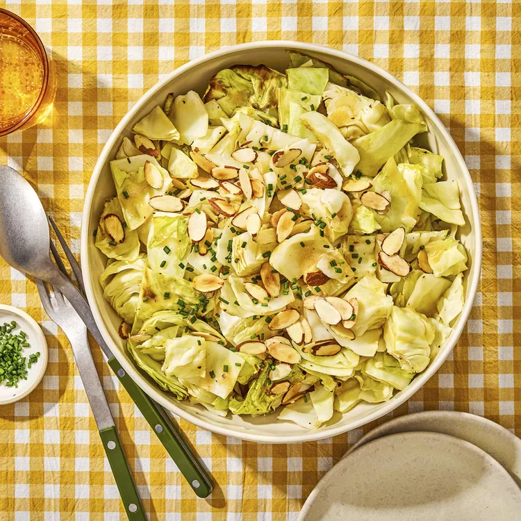

Roasted Cabbage Salad
Ingredients
- Olive oil cooking spray
- 1 medium head cabbage
- 1/2 teaspoon salt, divided
- Ground pepper to taste
- 1/4 cup extra-virgin olive oil
- 1 1/2 tablespoons red-wine vinegar
- 1 tablespoon lemon juice
- 1 1/2 teaspoons Dijon mustard
- 1 small clove garlic, grated
- 2 tablespoons sliced almonds, toasted
- 2 tablespoons minced fresh chives or parsley
Directions
- Step 1: Preheat oven to 400°F. Line a large rimmed baking sheet with foil, parchment paper or a silicone baking mat; coat lightly with olive oil cooking spray.
- Step 2: Remove any damaged outer leaves from cabbage and cut into 8 wedges, keeping the core intact to hold them together. Arrange the wedges on the prepared pan. Coat the tops of the wedges lightly with cooking spray and season with ¼ teaspoon salt and pepper to taste.
- Step 3: Roast the cabbage, rotating the pan from back to front and flipping the wedges halfway, until tender and golden, 30 to 40 minutes.
- Step 4: Meanwhile, combine oil, vinegar, lemon juice, mustard, garlic, the remaining ¼ teaspoon salt and pepper to taste in a jar with a tight-fitting lid. Cover and shake until well blended.
- Step 5: Let the cabbage cool for 5 minutes, then coarsely chop. Transfer to a shallow serving dish and drizzle with the dressing. Sprinkle with almonds and chives (or parsley) before serving.
Tip
For the best flavor, toast nuts before using in a recipe. To toast sliced nuts, place in a small dry skillet and cook over medium-low heat, stirring constantly, until fragrant, 2 to 4 minutes
Originally appeared: EatingWell.com, March 2024